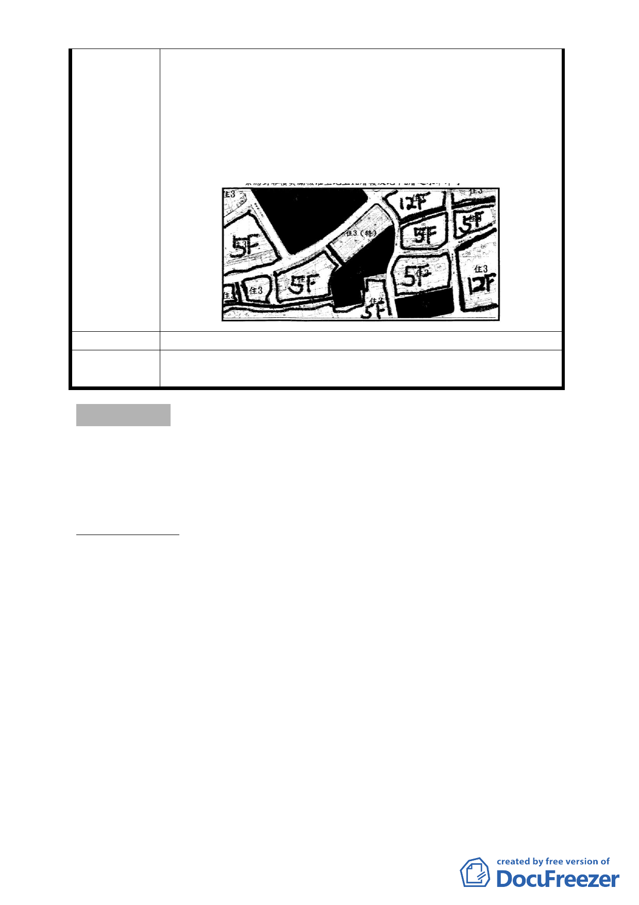

擇該特定人士所主導之建商為本社區之配合建商，由一
開始的 A 建設公司到中段的 B 建設公司到最後之 C 建
設公司，此 A、B 及 C 三家公司皆由該特定人士擔任董
事長或總經理，而本社區從初期推動更新作業到最後送
件審查，配合建商亦由 A 建設公司變更到 B 建設公司最
後換成 C 建設公司，還任配合建商因人設定，致本社區
原住戶之權益易於 其中受到嚴重損害。
建議辦法
委員會決議
錄案供市府都市設計及土地使用開發許可審議委員會及都市
更新及爭議處理審議會審議之參考
討論事項 二
案名：修訂「變更臺北市大同區延平段一小段710 地號等13 筆土
地第三種商業區為第三種商業區(特)細部計畫案」容積移
轉規定計畫案
案情概要說明：
一、計畫緣起：
本案基地座落本市大同區延平段一小段710、711、726、
727、728、729、730、731、732、733、734、735、736 地號
等13 筆土地上，基地範圍內731、732、733、734、735、736
地號等6 筆土地上現有一棟1930 年代興建之「新芳春茶
行」，鄰近大稻埕歷史建物特定專用區，為臺北城文化與經
濟發祥之重要地區，而其所處之民生西路段，早期多為經營
茶葉進出口貿易之茶行，後因經濟型態轉變，現多數商家轉
而經營傢俱生意，並有傢俱專賣街之稱。「新芳春茶行」為
1930 年代興建之三層磚造房屋，因建築物內部結構保存完
-6-